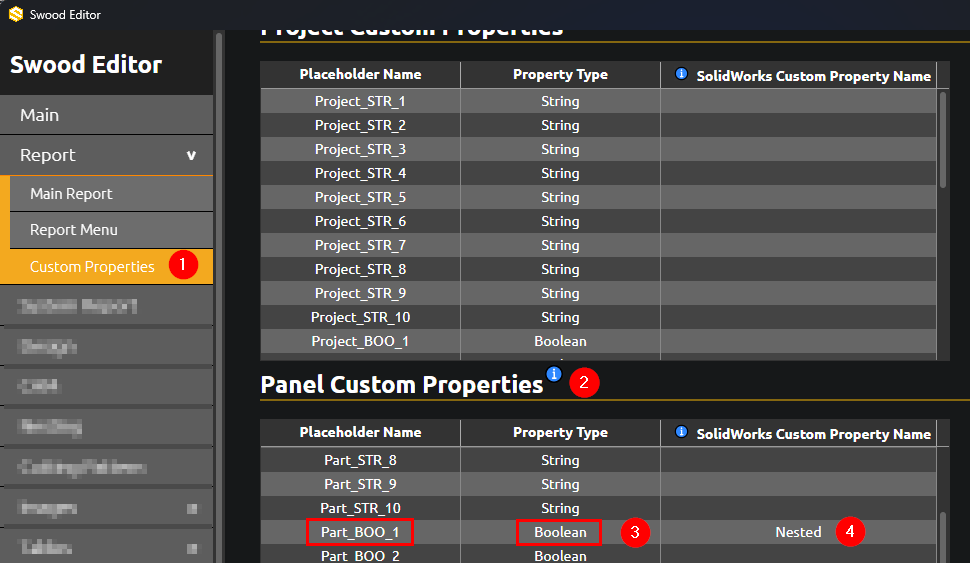
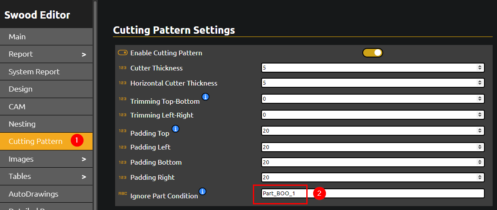
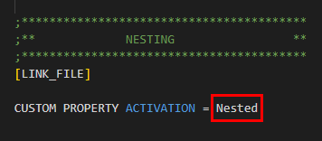

Nested or Beam Sawed
Overview
In some workflows, users may want to categorize panels into two main groups: Nested or Beam Sawed. Nested panels are processed using Swood Nesting, while Beam Sawed panels are optimized in the Cutting Pattern process.
This behavior can be controlled by assigning a custom property to the model, which defines how the panels will be processed.
Defining the Activating Custom Property
Define the custom property that will control whether a panel is nested. For example, a property called Nested could be used. If the property is set to "Yes" the panel will be nested; if set to "No" it will be sent to the Cutting Pattern.
By default, if this property is not defined, the panel will be processed using the Cutting Pattern. This default behavior cannot be changed.
Creating the Activating Property
To define the property that enables nesting, follow these steps:
- Open SwoodEditor and navigate to Report > Custom Properties.
- Create a new Panel Custom Property.
- Ensure the property type is set to Boolean.
- Enter a name for the property, such as Nested.
- Take note of the placeholder name, for example, Part_BOO_1.

Excluding Panels from Cutting Pattern
By default, all panels are sent to the Cutting Pattern unless the custom property is set to "Yes" for nesting. Follow these steps to exclude panels from the Cutting Pattern:
- In SwoodEditor, navigate to Cutting Pattern.
- Add the placeholder name to the Ignore Part Condition field.
- Save your settings.

Enabling Panels in Nesting
Panels with the custom property set to "Yes" will be processed using nesting. To enable this, follow these steps:
- Open the SWOODCAM.cfg file in a text editor, located in the DAT folder.
- Find the CUSTOM PROPERTY ACTIVATION field.
- Enter the custom property name, such as Nested.
- Ensure there is no semicolon (;) before the CUSTOM PROPERTY ACTIVATION entry. If present, remove it.
